Había pensado proyectar un contador de radiación de verdad. Al fin y al cabo todos hemos visto Chernobil y somos expertos en energía nuclear. Hay muchos detectores caseros, algunos con un tubo comercial, otros usan una válvula de vacío, también está el detector de chispas, la cámara de iones, he visto otros que usan un fotodiodo PIN, un CCD... Pero todos los medidores de radiactividad tienen una pega: resultan un tanto aburridos salvo que tengas algo radiactivo que medir.
Durante todo este artículo hablaremos de radiactividad. Describiremos cómo funciona un tubo Geiger-Müller y lo simularemos en el firmware de un PIC. Después hablaremos de contadores y construiremos un indicador analógico. Para terminar, nos centraremos en las unidades radiológicas y programaremos un dosímetro digital.
| 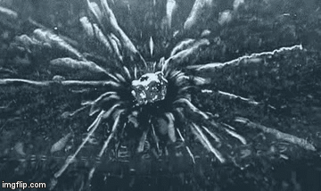 |
| Uranio disparando partículas dentro de una cámara de niebla. |
{kind=link}
El tubo Geiger-Müller
Un tubo Geiger-Müller se compone de dos electrodos dentro de un recipiente lleno de gas a baja presión.
| 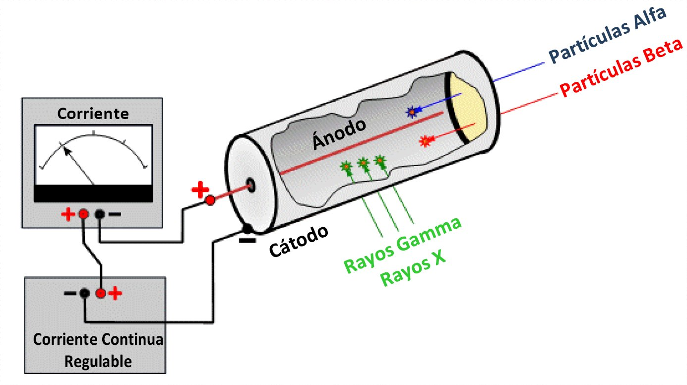 |
| Esquema de uso de un tubo Geiger-Müller. Wikipedia |
{kind=link}
Se aplica una tensión del orden de 600v entre los dos electrodos y como los gases secos no conducen pues ahí se queda. Cuando la radiación ionizante atraviesa el tubo, ioniza algunos átomos del gas. Los átomos cargados se aceleran hacia el electrodo contrario y van cogiendo velocidad. Esos iones, a su vez, ionizan más átomos del gas. Se produce una pequeña corriente y podemos detectarla. Muy bien explicado en este enlace.
Sólo necesitamos un altavoz en serie con el tubo para escuchar un chasquido cuando entra una partícula y lo descarga. A más radiación mayor probabilidad; y de ahí su sonido aleatorio. Esos tics o pulsos luego se cuentan. El resultado se da en conteo por minuto (CPM) o por segundo (CPS).
| 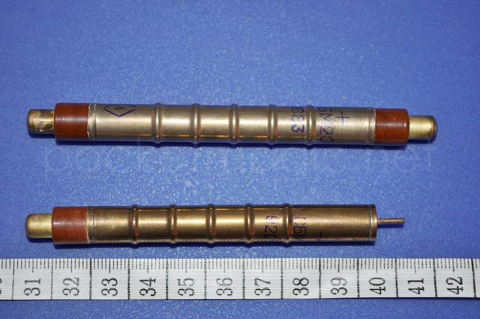 |
| Tubos SBM20 y SBM20U (más corto). pocketmagic.net |
{kind=link}
Pero ¿a cuánta radiación equivalen cuántos tics? Depende de la construcción del tubo, su geometría, composición, y otros factores. Es un dato que suele venir en el datasheet. Por ejemplo para el tubo SBM-20 -muy común-, su datasheet dice:
| 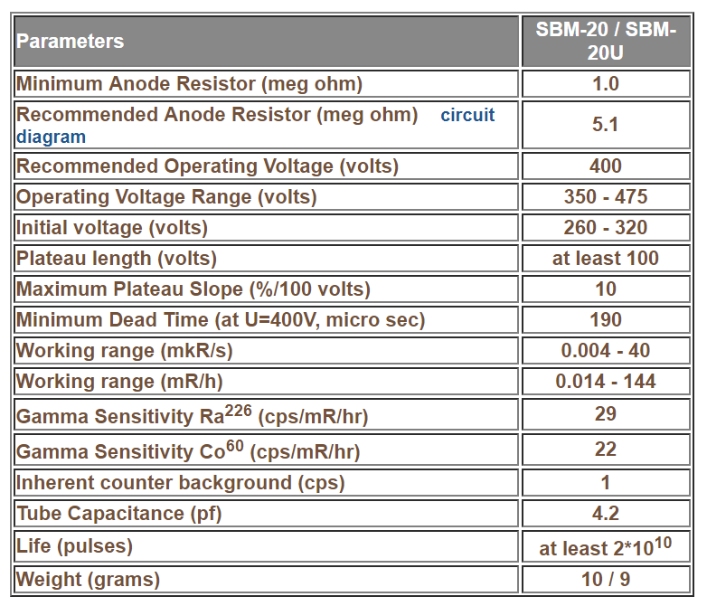 |
| Extracto de la hoja de características de un tubo SBM-20. gstube.com |
{kind=link}
Algunos parámetros son la tensión de trabajo o la resistencia en serie recomendada. Por cómo está construido este tubo, cada pulso va inutilizando un gas de su interior hasta quedar inservible. Por lo tanto, también se indica el tiempo de vida. En este caso 2x1010 pulsos.
Otro ejemplo, el LND-712, tiene además una ventana para detectar partículas alfa:
| 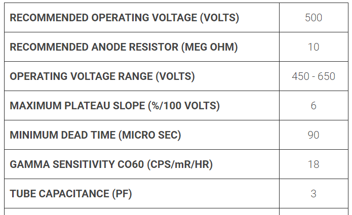 |
| Datasheet del LND-712. lndinc.com |
{kind=link}
Para aprender más sobre distintos tubos y sus características podéis visitar GM Tube Info
Ahora bien, radiaciones hay de muchos tipos. Hay partículas alfa, tan gordas y cargadas que se dejan toda su energía en atravesar unos centímetros de aire o una fina hoja de papel. Hay partículas beta que son electrones rápidos (algunos muy rápidos). Hay partículas gamma que son fotones muy energéticos. Un repaso rápido si recordáis, en orden creciente los fotones van así: las ondas de radio (incluyendo microondas), infrarrojos, luego luz visible -del rojo al violeta-, ultravioleta A y B, luego UV-C (estos ya son un poco ionizantes), después van los rayos X y finalmente, todo lo que sigue con energías mayores, eso son los rayos Gamma. Luego en partículas también están los neutrones, muones, neutrinos, etc.
{kind=link}
¿Y un tubo GM las detecta todas? ¡Qué va! Las alfa y las beta sí son fáciles de detectar, porque están cargadas y crean iones fácilmente. Las alfa no pueden atravesar las paredes del tubo si son metálicas o de vidrio, pero hay tubos con una fina ventana de mica para poder detectarlas. Los rayos X y gammas no tienen carga, aunque llevan tanta energía que arrancan electrones de las mismísimas paredes del tubo y esos electrones sí provocan la descarga. Detectar neutrones requiere de un tubo especial.
Para un detector genérico de campo lo importante es encontrar objetos con contaminación radiactiva o sea fotones. La radiactividad más penetrante, común y dañina. Después, una vez determinada la fuente y el grado de contaminación, ya habrá tiempo de tomar una muestra, llevarla al laboratorio y analizarla. Pueden saberse los isótopos radiactivos en la muestra mirando la energía de los fotones gamma que emite.
| 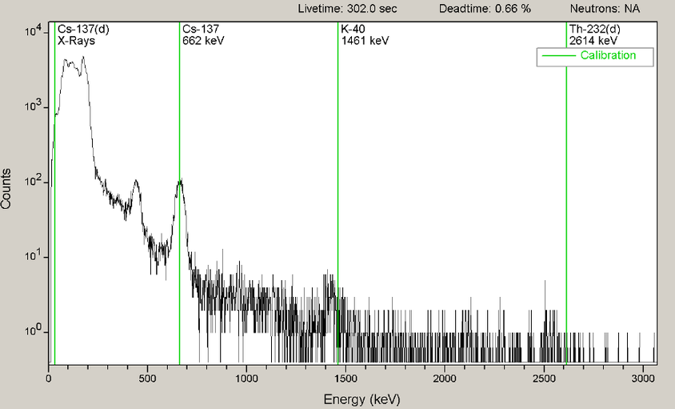 |
|
Espectro Gamma desconocido con marcadores en algunos elementos conocidos. researchgate.net |
{kind=link}
¿Y clasificando las betas no se podría saber también? No es tan fácil. El espectro de la emisión beta es mucho más difuso. ¿Por qué? Eso fue algo que intrigó a los físicos durante décadas. El descubrimiento del neutrino es una historia fascinante...
Según la energía del fotón gamma, este interacciona más o menos con el tubo. O sea que según el isótopo, el medidor dará una lectura mayor o menor para la misma dosis. El SBM-20 registra 29 cps/miliroentgen/hora para el 226Ra y de 22 para el Cobalto 60.
El valor del datasheet sólo es orientativo porque luego los tubos tienen cierta tolerancia en la fabricación. Siempre es necesario calibrar el medidor. Se toma una fuente de actividad conocida -comúnmente de Cesio 137 o Cobalto 60- y se sitúa próxima al tubo en unas condiciones concretas. Se miden los pulsos por minuto o por segundo y con eso tenemos el valor de pulsos por segundo por cada miliroentgen/hora.
¿Y si luego el isótopo que medimos es otro, o una mezcla de varios? Pues el medidor revelará contaminación radiactiva igualmente, pero la lectura no será exacta.
Sólo por la radiactividad natural de fondo, un tubo GM puede contar desde 10 a más de 75 cpm dependiendo de la sensibilidad del tubo y de la zona geográfica. En cada lugar del mundo la radiactividad natural es distinta. Podéis ver un mapa actualizado en tiempo real en GMCmap.
| 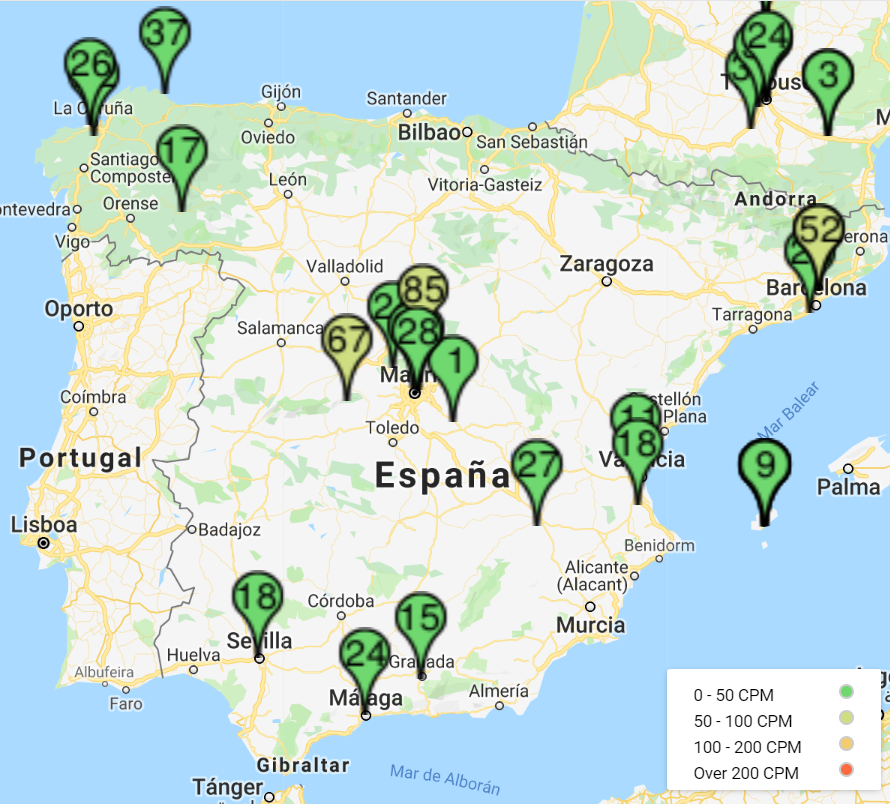 |
| Mapa de contadores en tiempo real. GMCMap |
{kind=link}
Esquema eléctrico
El propósito de este medidor es simular el chisporroteo de un contador radiactivo en función de la temperatura. Lo haremos así: generaremos un número aleatorio y, dependiendo de la temperatura, ese número aleatorio tendrá una probabilidad mayor o menor de excitar un altavoz. Luego veremos el software pero por ahora aquí está el esquema eléctrico:
| 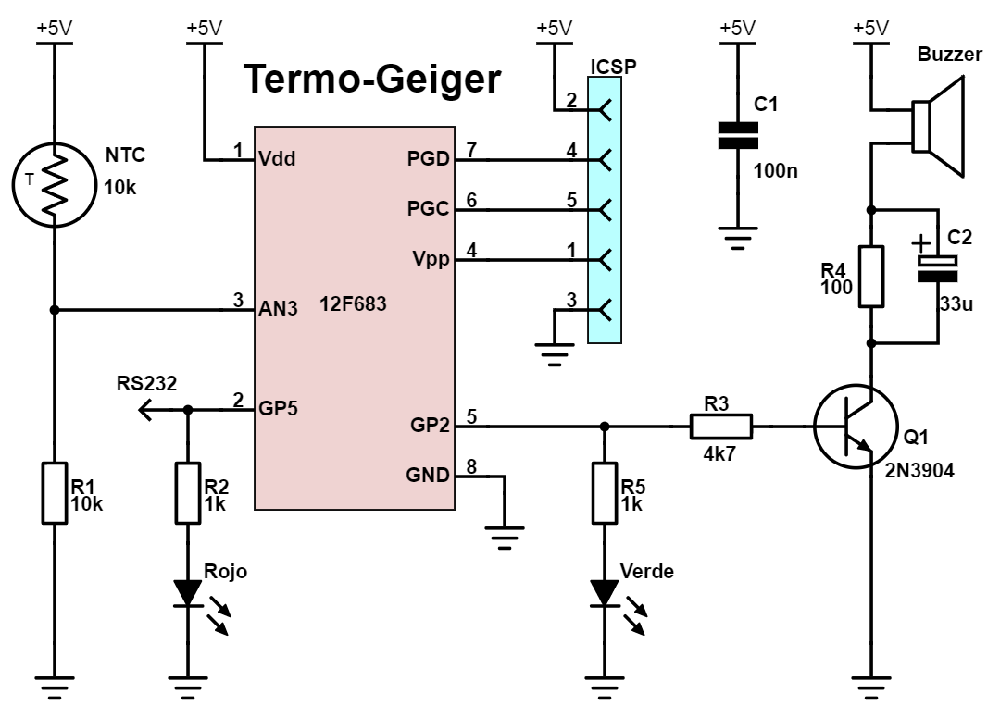 |
| Esquema eléctrico del contador. EyC. |
{kind=link}
El circuito está basado en un microcontrolador PIC modelo 12F683. Es barato, pequeño, fácil de programar y versátil. No es especialmente rápido ni potente, pero nos servirá. Hay electrónica más allá de Arduino y Raspberry.
La resistencia R1 forma un divisor resistivo con la NTC. Esta tensión la aplicamos a la patilla 3 del integrado, configurada como entrada analógica, para determinar la temperatura aproximada.
De la patilla 5 sale un pulso positivo cada vez que, digamos, detectemos una partícula. Con ese impulso excitaremos un LED verde y también la base de Q1 que empezará a conducir.
El buzzer es un zumbador inductivo, los hay piezoeléctricos pero el mío es inductivo. Tiene una resistencia interna cercana a los 18ohm. R4 está ahí para limitar la corriente que atraviesa el zumbador en caso de que la patilla se quede fija en nivel alto. Cosa que podría pasar si nuestro tubo se satura por el alto nivel de radiación. C2 en cambio tiene la misión contraria; está ahí para suministrar mayor intensidad ante un pulso breve.
La patilla 2 del integrado la pondremos a nivel alto cuando el medidor esté activo. Y de esa forma sabremos cuándo está funcionando. Además también podremos escribir mensajes de depuración si fuera necesario para leerlos a través de un puerto serie RS232.
Las patillas 4, 6 y 7 las destinamos para programación ICSP de momento.
Este es el prototipo del detector, montado sobre una placa universal perforada:
| 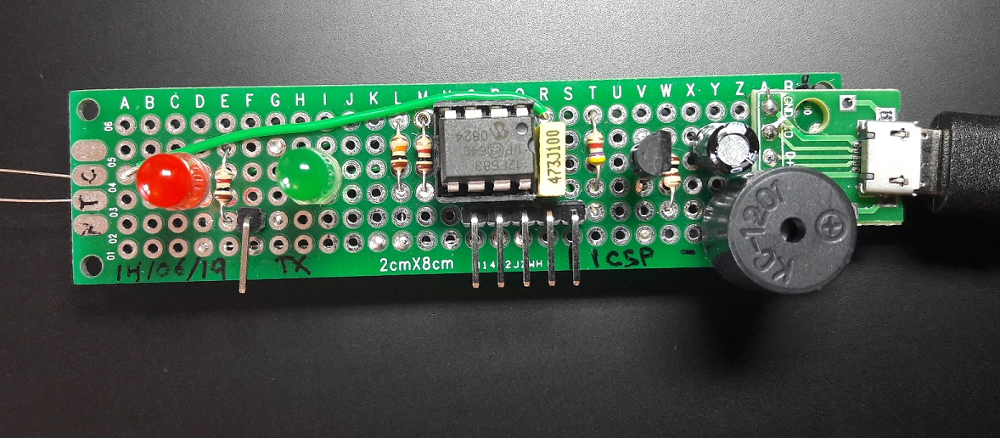 |
| Prototipo del contador. EyC. |
{kind=link}
Firmware
Tal como habíamos adelantado, este es el bucle principal:
- Medimos la temperatura.
- Con la temperatura calculamos la apertura. Llamamos así al umbral para que suene tic o no.
- Sacamos un número aleatorio.
- Si el número obtenido es mayor que la apertura sonará tic, y si es menor no.
- Repetimos en bucle.
Aquí tenéis el software: GitHub termogeiger. También os dejo un hex con el código compilado para programar directamente un PIC12F683.
Quiero destacar el generador aleatorio. Se trata de un XorShift de 32 bits. Es un algoritmo muy rápido porque sólo usa xor y desplazamientos de bits. Apropiado para microcontroladores de poca potencia como en este caso. También es relativamente nuevo, fue propuesto por George Marsaglia en 2003.
Es apropiado para conseguir que los tics de nuestro detector parezcan fortuitos.
unsigned int32 xs; // random variable
long rand16b() {
xs ^= xs << 13;
xs ^= xs >> 17;
xs ^= xs << 5;
return xs>>16; // 32 -> 16bits
}
El estado del generador es la variable XS y es de 32 bits. Usamos 32 bits en el estado para evitar un patrón repetitivo en el tiempo. El bucle principal se va a ejecutar unas 2000 veces por segundo. Con un generador de 8bit de estado tendríamos un ciclo de sólo 255 números aleatorios, como máximo. No son 256 porque el 0 no cuenta en un XorShift. 255 números a 2000 veces por segundo nos daría un patrón cíclico que se repetiría 8 veces por segundo. Con 16 bits el ciclo se repetiría cada 8 segundos, aún podríamos reconocerlo. Con 32 bits el patrón se repetiría cada 600 horas. Suficiente.
Después, el propósito del número aleatorio es compararlo con un umbral al que llamamos apertura. Como esta es de 16 bit, no tiene sentido generar un número mayor, por eso lo reducimos a 16 bit.
¿Y la semilla? Pues aprovecharemos alguna patilla con ADC que esté al aire sin conectar. Por ejemplo una que habíamos destinado antes a ICSP. Y haciendo 32 lecturas consecutivas crearemos un número de 32bit compuesto por los bits menos significativos.
void randomize() {
setup_adc_ports(PIN_A1);
set_adc_channel(1);
setup_adc(ADC_CLOCK_DIV_16);
delay_us(20);
xs = 0;
int i=32;
while (i--) {
int a = read_adc();
a &= 1;
xs <<= 1;
xs |= a;
}
if (xs == 0) xs = 1;
printf("Random seed: %Lx\r\n", xs);
}
El ruido nos proporcionará la semilla aleatoria que necesitamos. No es lo ideal pero al menos el detector sigue ciclos diferentes en cada encendido.
El cálculo de la apertura es el corazón de nuestro medidor.
Si vamos a imitar un contador de verdad lo primero es imitar la radiación de fondo. A una temperatura ambiente (pongamos 25ºC) le corresponden unos 40-60 cpm dependiendo de la sensibilidad del tubo. A partir de ahí hacemos una tabla temperatura/cpm de acuerdo a como queremos que se comporte.
Por ejemplo al máximo de temperatura, pongamos 125ºC le correspondería el máximo de cpm que diera nuestro medidor -como podéis intuir, esto depende de la duración del bucle principal-. Este tarda unos 450us en ejecutarse. Eso son unas 2222.2 veces por segundo. Las 133333.3 veces por minuto que veis como máximo.
| 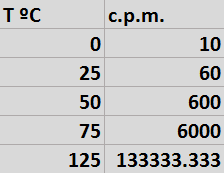 |
| Tabla de temperatura y CPM asociado. EyC. |
{kind=link}
La cual nos da este gráfico.
| 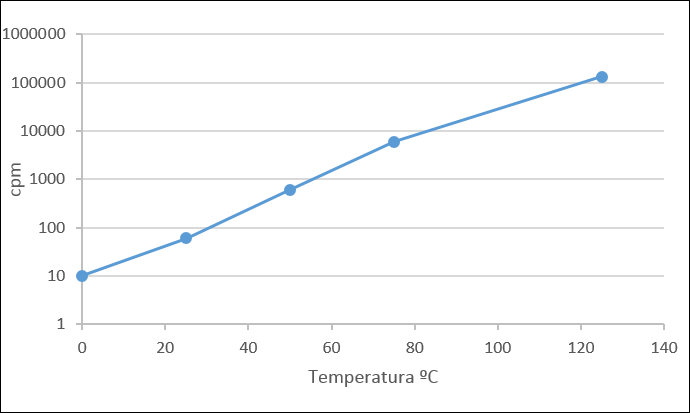 |
| Representación gráfica de la tabla anterior. Escala logarítmica. EyC. |
{kind=link}
La temperatura hará variar la resistencia NTC de acuerdo a una curva característica no lineal. Hay una explicación muy buena en Measuring the temperature with NTCs.
Las NTC se modelan usando dos parámetros: la resistencia a 25ºC y el parámetro Beta. Los podéis calcular o tomarlos del datasheet. En mi caso son 10k y 3950.
Con eso calculamos la resistencia a una temperatura dada:
{kind=link}
La resistencia del divisor R1 es de 10k. De ahí calcularemos la tensión en la patilla 3 del integrado y también el valor del ADC correspondiente a dicha tensión.
{kind=link}
El programa no entiende de temperaturas, sino de valores recogidos en el ADC. Por eso la columna es verde. Este es un dato del programa.
Llamamos apertura al umbral con el que vamos a comparar el número aleatorio. A mayor apertura mayor probabilidad de extraer un número aleatorio menor, y por tanto más cpm.
El generador aleatorio tiene una salida de 16bit, su valor máximo es 65535 y el bucle corre a 133333.3 cuentas por minuto. Suponemos una distribución uniforme de números aleatorios. O sea que, dividiendo, cada número son aproximadamente 2 cpm. Para tener las 60 cpm buscadas tendríamos que mirar si el número es menor o igual a 30. Aquí sale 29 por los decimales.
Repetimos el mismo cálculo para las demás temperaturas:
{kind=link}
Y ahora, para cualquier otro valor que no esté en la tabla, tan sólo debemos interpolar entre los dos valores más cercanos. La ecuación de una interpolación lineal es así:
\[
y=y_{0}+\underbrace{\frac {y_{1}-y_{0}} {x_{1}-x_{0}}}_A\ (x-x_{0})
\]
Esta ecuación debemos optimizarla para su uso en un microcontrolador sin FPU. Nos interesa ganar velocidad en el bucle principal porque, si el bucle tarda varios milisegundos, no podríamos oír dos tics más próximos entre sí que ese tiempo.
La división, por ejemplo, está formada por valores fijos, constantes. La precalculamos y la llamaremos A.
\[
\begin{split}
y &=A (x-x_{0})+ y_{0}\\\\
&= Ax\ \underbrace{-Ax_{0} + y_{0}}_{-B}
\end{split}
\]
La suma $-Ax_{0} + y_{0}$ es también constante, no depende de x, la llamaremos B. Realmente, como en este caso es siempre negativa, la llamaremos $-B$ y nos ahorramos poner el signo menos todo el rato. Reescribimos la ecuación anterior de esta otra forma:
\[
y = Ax - B
\]
siendo
\[
\begin{split}
A &= \frac { y_{1}-y_{0}} {x_{1}-x_{0}} \\\\
B &= Ax_{0} - y_{0}
\end{split}
\]
{kind=link}
Operar en coma flotante tampoco es buena idea. Ya lo vimos antes en
La presión atmosférica, BMP280. Pasaremos a punto fijo para ahorrarle trabajo al procesador y nos queda:
{kind=link}
De nuevo las columnas en verde son los datos del programa. Ahora tenemos todo listo para calcular la apertura.
unsigned int8 app_table_x[] =
{58,128,188,222,247};
unsigned int32 app_table_a[] =
{394,1404,18159,319729,10254090};
unsigned int32 app_table_b[] =
{1182,30486,1102780,29450360,1132164465}
/* Returns a value between 0-65535 as a function of ADC level */
unsigned int16 apertura(int8 x) {
unsigned int32 b = 0;
unsigned int32 acc = 0;
unsigned char i = 0;
if (x == 0) return 0;
if (x == 255) return 0xFFFF;
while (app_table_x[i] < x) {i++;}
acc = app_table_a[i];
b = app_table_b[i];
acc *= x;
acc >>=1;
acc -= b;
acc >>=11;
if (acc > 0xFFFF) acc = 0xFFFF;
return acc;
}
Os podéis descargar la hoja de cálculo aquí.
Tras detenernos en las dos funciones más importantes, vamos al bucle principal.
while(true) {
unsigned long rnd,app;
unsigned int adc;
/* Read ADC while calculating random number */
read_adc(ADC_START_ONLY);
rnd = rand16b();
adc = read_adc(ADC_READ_ONLY);
/* Calculate opening from ADC value */
app = apertura(adc);
if (rnd < app) {
output_high(OUT_PIN);
set_timer0(0);
clear_interrupt(INT_TIMER0);
enable_interrupts(INT_TIMER0);
}
}
Lo primero es lanzar la lectura del ADC. Esta nos dará la temperatura. Mientras se obtiene el valor, en paralelo, llamamos al generador aleatorio para extraer el siguiente número.
A partir de la lectura del ADC calculamos el umbral. Para lo cual usamos la función apertura que habíamos visto antes.
Si el número aleatorio resulta ser inferior a la apertura, activamos el buzzer poniendo el pin de salida a nivel alto. Luego reiniciamos el Timer0 y activamos el controlador de interrupciones. Al cabo de 512us, Timer0 se desbordará y generará una interrupción, desactivando el altavoz.
Podríamos haber esperado los 512us en el bucle, pero no lo hacemos así. Desactivamos la salida en segundo plano porque así, si la radiación es muy alta, se produce un efecto de saturación. Timer0 estaría prácticamente todo el tiempo reiniciándose y no llegaría a lanzarse nunca la interrupción de apagado.
Este efecto sucede realmente. Un tubo GM tras descargarse necesita un pequeño tiempo de recuperación. Si se somete a una radiación muy elevada está todo el rato descargado y no mide. Incluso podría darse el caso de que, ante una radiación muy intensa, la lectura fuera anormalmente baja.
Contador analógico
En un detector de radiactividad el feedback acústico es muy práctico. Sobre todo para buscar zonas calientes mirando al terreno. Pero es difícil dar una lectura sólo de oído.
A principios del siglo XX se situaba el material radiactivo sobre una pantalla especial y se contaban de forma manual los centelleos en un tiempo dado.
| 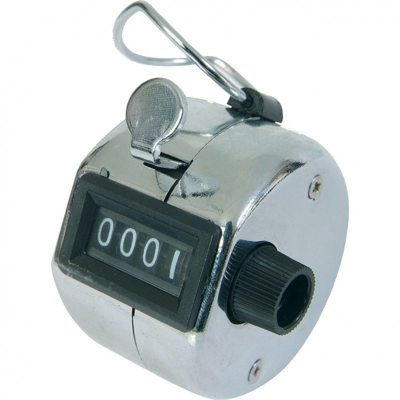 |
| Contador manual. |
{kind=link}
Más adelante, conforme se fueron popularizando los componentes eléctricos, condensadores, resistencias o amperímetros se usó un indicador analógico.
El que vamos a hacer nosotros consiste simplemente en un circuito rectificador formado por un transistor, un condensador y algunas resistencias:
| 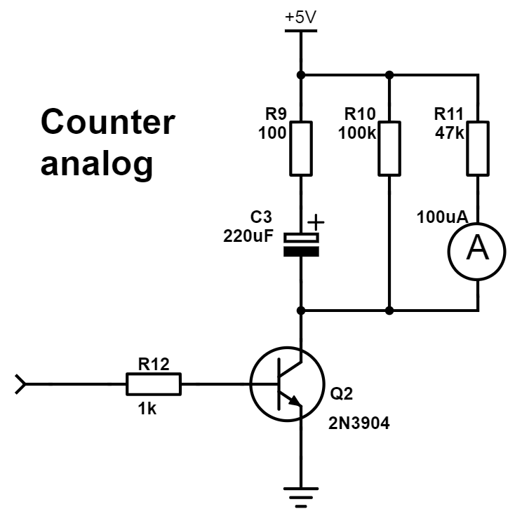 |
| Esquema del contador analógico. EyC. |
{kind=link}
Los pulsos entran por la izquierda, atravesando R12. Su propósito es limitar la corriente a través de la base del transistor Q2. Hay mucho margen. La corriente debe ser lo suficientemente alta como para llevar al transistor a saturación, pero a la vez lo suficientemente baja como para no exceder el máximo de salida del PIC (20mA).
Durante el tiempo que Q2 está activo, C3 se carga a través de R9. La misión de esta resistencia es limitar la corriente a través del transistor. En el caso del 2N3904 no debería exceder los 200mA.
El transistor también actúa como rectificador. C3 se descargará a través de R10 y R11. La primera está actuando de shunt para proporcionar al condensador una vía de descarga paralela al medidor. La segunda limita la corriente que atraviesa el micro amperímetro y será quien determine el fondo de escala. Entre las dos determinarán la velocidad con la que la aguja vuelve a cero.
| 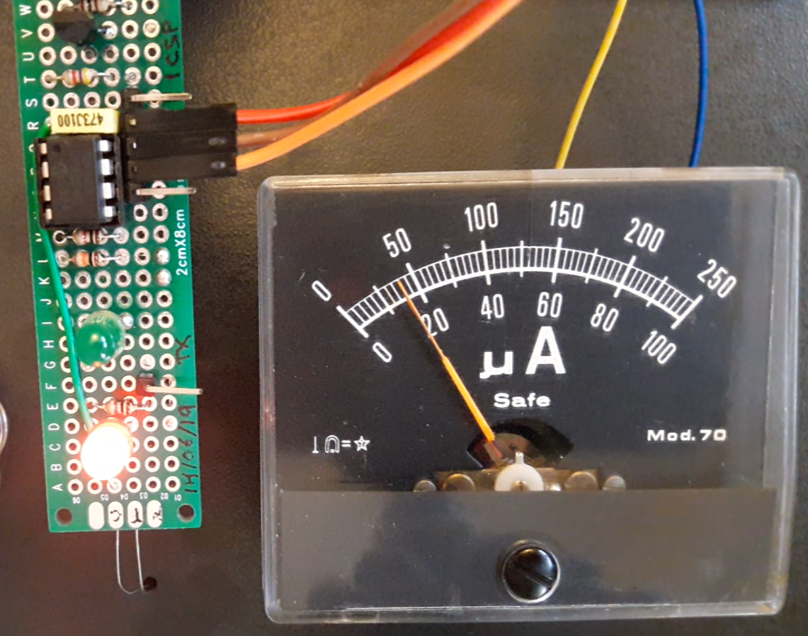 |
| Contador analógico. EyC. |
{kind=link}
En el siguiente vídeo podemos ver nuestro medidor. Primero midiendo el fondo de nuestro laboratorio: 10uA. Y posteriormente midiendo la actividad de un vaso de agua caliente. No hemos tenido en cuenta ni calibración ni escala, la lectura es meramente cualitativa.
Esta es la aguja de un CDV-700. El típico medidor amarillo, grande, con un asa que sale en casi todas las películas antiguas. Como podéis ver está calibrada en CPM en la parte de abajo y en miliroentgen por hora en la de arriba. 300 cpm equivalen en esa escala a 0.5mR/h. O sea, 100 cpm por miliroentgen/h.
A falta de mejores medios, el CDV-700 puede calibrarse con una fuente radiactiva de uranio empobrecido que lleva en el lateral. Debe medir 2mR/h. Pero eso significa que este medidor va calibrado con Uranio, antes habíamos dicho que generalmente los medidores modernos se calibran con Cesio.
Contador digital
Cuando la electrónica avanzó lo suficiente, los medidores analógicos fueron sustituidos por medidores digitales con más funciones. En lugar del rústico contador analógico, vamos a diseñar un contador digital para nuestro detector.
Para este proyecto empleo un PIC16F88. El esquema eléctrico se limita a lo imprescindible para leer los pulsos del detector y conectar la LCD. Todo lo demás lo hacemos por software en el PIC.
| 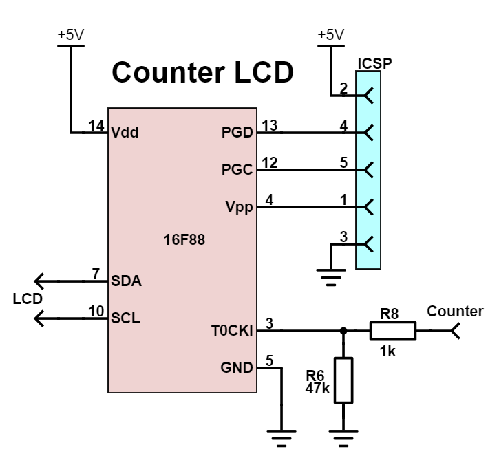 |
| Esquema del contador digital. EyC. |
{kind=link}
La entrada se hace a través de la resistencia R8 hacia la patilla 3. Esta patilla se puede configurar como contador asíncrono. Cada transición de nivel bajo a alto en la patilla 3 incrementará Timer0. Hace años habíamos usado este mismo método para hacer un frecuencímetro en Frecuencímetro para el PC.
Las patillas 7 y 10 las usaremos para controlar la LCD por I2C. Las LCD se pueden manejar directamente en modo 8 bit, lo que requiere 11 pines; usando el modo de 4 bits (dos escrituras por comando), esto requiere 7 pines; o se puede usar un expansor de I/O tipo PCF8574 y manejarlas sólo con 2 pines mediante I2C.
La complejidad aumenta al introducir esa capa de abstracción. Porque ya no estamos dando órdenes a la LCD, estamos dando dos ordenes por comando al PCF8574 para que maneje las líneas de la LCD en modo 4 bits. Hace poco escribí una librería muy completa para interactuar con LCD basadas en el PCF8574. Permite los comandos básicos de escritura y posicionamiento, leer el estado de la LCD, definir caracteres personalizados, etc. wPi_soft_lcd. Es para Raspberry pero con unas adaptaciones he conseguido hacerla funcionar en un microcontrolador PIC.
El software lo tenéis en GitHub firmware/counter-lcd.
Aquí un fragmento de counter-lcd.c. Timer0 servirá para contar los pulsos en modo asíncrono, como hemos dicho. Timer1 nos servirá para contar el tiempo transcurrido.
unsigned int t0of; // T0 overflow, 256*presc counts
unsigned int t1of; // T1 overflow, to keep track of time
unsigned int ready; // new measure is ready
#int_TIMER0
void TIMER0_isr(void)
{
t0of++;
}
#int_TIMER1
void TIMER1_isr(void)
{
t1of++;
if (t1of < MIN_T1_OF) return;
if (get_timer0() >= MIN_COUNT ||
t1of >= MAX_T1_OF)
ready = 1;
}
En este microcontrolador, Timer0 es de 8 bits, tan sólo puede contar hasta 256 pulsos. Cuando llega a 256 se desborda, vuelve a 0 otra vez y produce una interrupción. En el manejador de interrupciones de Timer0 únicamente incrementamos en 1 el valor de la variable t0of (timer0 overflow). Así sabremos cuántas veces se ha desbordado.
Timer1 es de 16 bits, es decir que llega hasta 256x256. Se incrementa automáticamente en cada ciclo de instrucción. Las instrucciones toman 4 ciclos de reloj. Con el oscilador interno funcionando a 8 Mhz, esto significa un incremento cada 0.5 us. Tardaría en desbordarse 32768 us. Con un prescaler podemos prolongar este tiempo hasta 8 veces. Es decir hasta los 262.14 ms.
También usamos la variable t1of para llevar la cuenta de las veces que se desborda Timer1. Esto son incrementos de 262.14ms.
La variable ready indica cuándo una lectura está lista para procesarse. Que puede ser cuando hayamos alcanzado el límite de tiempo (por ejemplo 5 segundos). O cuando hayamos contado una cantidad significativa de pulsos.
/* Calculate CPM (exponential moving average) */
cpm = 60*1e6*count/us;
cpm = (ALPHA*cpm+(100-ALPHA)*oldcpm)/100;
oldcpm = cpm;
Luego sólo tenemos que expresar el resultado en CPM. Para eso dividimos el conteo entre los microsegundos transcurridos y multiplicamos por 60x106 µs que tiene un minuto.
Como es aleatorio, tendríamos que medir durante un tiempo muy grande para tener una lectura fiable. En su lugar tomamos medidas cada poco tiempo y promediamos. En este caso con una media exponencial.
Dosímetro
Las unidades en radiología son un poco lío. Tenemos las unidades de actividad radiológica, exposición, dosis absorbida, dosis equivalente y dosis efectiva. Y para colmo en dos sistemas de unidades diferentes.
Básicamente se trata de medir la energía y repercusión sobre un ser vivo. Pero -como ya vimos- la energía depende de los radionúclidos presentes. Y los efectos biológicos dependen del área irradiada y del tipo de radiación... la cual a su vez también depende del isótopo.
Desde el primer momento se sabía que eran radiaciones ionizantes. Así pues, tienen un efecto fácil de medir: la ionización. Midamos la ionización producida en un centímetro cúbico de aire seco en condiciones estándar. No parece una unidad muy ortodoxa pero resultaba práctica, más aún cuando los detectores más comunes eran cámaras de ionización. Después de todo, cuando los Curie lograron aislar el radio en 1910, aún faltaban casi 20 años para que se inventara el tubo Geiger-Müller.
Así fue como se definió el roentgen o röntgen en 1928 para medir la dosis (por entonces sólo se hablaba de dosis, sin apellidos). Como la radiación se emite de continuo, es conveniente introducir una unidad de tiempo; de ahí los roentgen/h. Luego sólo hay que multiplicar por el tiempo de exposición para saber a cuántos roentgen en total has estado expuesto.
Al principio sólo se estudiaban los rayos X. Pues era lo único con utilidad práctica: hacer radiografías. Más adelante cobraron relevancia otras radiaciones -gamma, beta, neutrones- y comprendimos mejor cómo causan sus efectos. Resultó que los roentgen sólo funcionaban bien para medir la dosis de rayos X, y medio bien para los rayos gamma. Un avance importante fue relacionar los efectos con la cantidad energía que estas partículas ceden a la materia al atravesarla.
Por ejemplo, una partícula muy rápida, muy pequeña y sin carga como puede ser el neutrino apenas interactúa con nada. Pueden atravesarte diariamente millones de neutrinos y dará igual. La probabilidad de que alguno se encuentre con un átomo de tu cuerpo es insignificante.
En 1953 se definió el concepto de dosis absorbida y se creó una nueva unidad: el rad (Radiation Absorbed Dose). Un rad mide la energía (en ergios) depositada por las partículas radiactivas en un gramo de materia. Hay unas tablas para convertir roentgen a rad según el material absorba más o menos radiación.
El sistema CGS, propuesto por Gauss, era el estándar en vigor desde finales del s.XIX. Hasta que en 1960 se publicó el Sistema Internacional de Unidades. Una comisión ya llevaba trabajando en él los últimos 12 años. Las antiguas unidades del sistema CGS pasaron a considerarse obsoletas. La comunidad científica adoptó pronto el SI, pero las unidades CGS eran aún ampliamente usadas en la industria.
La recomendación fue dejar de usar el Roentgen porque no reflejaba con exactitud los efectos de las nuevas radiaciones descubiertas desde su definición. Se modificó el concepto de dosis por considerarse ambiguo, sustituyéndose por el de exposición. Esta pasó a darse en términos de Culombios por kilogramo de aire. Hoy en día el roentgen se usa sobre todo en EEUU.
La unidad de dosis absorbida pasó de ser el rad a ser el Gray, otra nueva unidad definida en términos de Julios por kilogramo.
Mientras, se iban sucediendo avances en la comprensión de los efectos biológicos. En parte gracias a los estudios en supervivientes de Hiroshima y Nagasaki. El bombardeo había sucedido en 1945. Eran los únicos sucesos hasta la fecha en los que fueron irradiados un gran número de seres humanos, y de los que se ha podido hacer seguimiento en el tiempo.
La dosis absorbida no era suficiente para pronosticar las consecuencias. Deberíamos multiplicar la dosis absorbida por algún factor para tener en consideración el tipo de radiación. A esa dosis la llamaremos dosis equivalente. Los científicos que aún usaban el roentgen definieron para esto el rem (röntgen equivalent man) en 1971. O más bien lo redefinieron, porque se llevaba hablando de dosis biológica desde hacía 20 años. Los científicos que ya habían adoptado el Sistema Internacional no tardaron en crear una nueva unidad: el Sievert.
| 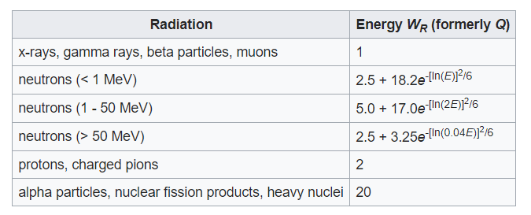 |
| Factor de ponderación biológico según radiación (Wr). Wikipedia |
{kind=link}
Por otro lado, y para terminar, algunos órganos son más sensibles que otros. La piel por ejemplo es poco sensible, el tiroides en cambio lo es mucho más. Por otro lado es más fácil irradiar la piel que los órganos internos. Así pues, se define otra dosis, la dosis efectiva. También se mide en Sievert, y no es más que la dosis equivalente multiplicada por un coeficiente que depende de la sensibilidad de la zona irradiada.
| 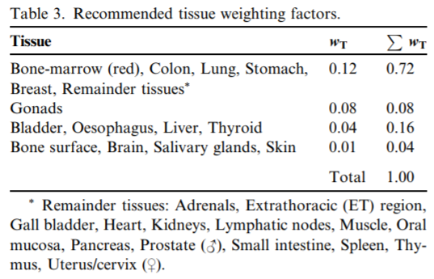 |
|
Factor de ponderación según el tejido irradiado (Wt). Commission on Radiological Protection - Annals of the ICRP, 103 |
{kind=link}
Un pequeño esquema para resumirlo:
| 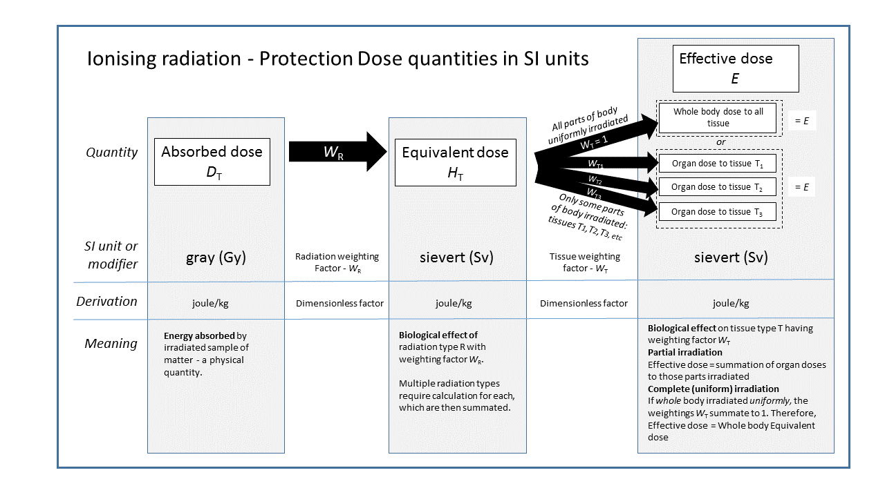 |
| Dosis de radiación en el SI. Wikipedia |
{kind=link}
Igual que antes, al ser los efectos acumulativos, necesitamos introducir la unidad de tiempo. Por conveniencia la dosis equivalente suele medirse en microsievert por hora (µSv/h), o milisievert por año (mSv/a).
Volviendo a la pregunta inicial ¿cómo pasamos de CPM a dosis? Es una pregunta con trampa. CPM es una medida de actividad radiactiva y Sievert de daño biológico. Las dos magnitudes no son equivalentes.
De nuevo volvemos a la calibración, tal y como habíamos hecho antes para obtener los mR/h de nuestro tubo. Tomamos una fuente de actividad conocida (que suele ser Cesio-137). Como sabemos la actividad y el tipo de radiación ya podemos calcular la dosis equivalente. Si suponemos una irradiación uniforme en todo el cuerpo, la dosis efectiva y la equivalente se tornan iguales. Pues con esa fuente de calibración, bajo unas condiciones concretas, medimos las CPM de nuestro detector.
De ahí obtenemos un factor que relaciona las CPM con la dosis en µSv/h. Pero, ojo, porque ese factor sólo tiene sentido bajo las condiciones descritas. Por eso la única lectura consistente en un medidor Geiger es las CPM. Todo lo demás es orientativo.
Con ese factor procedemos a hacer la cuenta para plasmarlo en la LCD tanto en µSv/h como en mSv/a:
/* Dose per Hour */
svh = (float)cpm / CPM_PER_USVH;
/* Dose per Year */
//24*365/1000 = 8.76
sva = 8.76*(float)cpm / CPM_PER_USVH;
/* Total dose */
sv = 1. * totalcount / CPM_PER_USVH;
La última variable es la dosis acumulada. Es decir, la dosis total recibida por estar expuesto a la radiación durante un tiempo determinado.
En este vídeo comenzamos con 50 CPM, un valor estándar que da nuestro tubo para la actividad de fondo del laboratorio. Estos 50 cpm corresponderían a 0.16 µSv/h o a 1.39 mSv/a. Si queréis calcular la dosis que recibís normalmente durante un año, podéis usar este formulario: Radiation Dose Calculator.
| 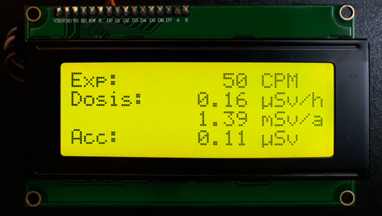 |
| Nuestro contador midiendo la radiación natural. EyC. |
{kind=link}
Cuando exponemos el medidor a un foco caliente, la detección alcanza las 4000 CPM. Esto equivale a 115 mSv/a, entre 40 y 80 veces la dosis natural. Al término de la medición habríamos acumulado 2.80 µSv. Sin ser estrictos, el equivalente a 3 radiografías según la Radiation Dose Chart (xkcd).
| 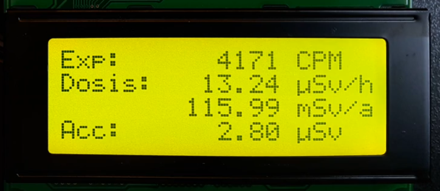 |
| Contador midiendo un objeto caliente. EyC. |
{kind=link}
El código fuente y los esquemas para construir este medidor os los dejo aquí: GitHub de Electronicayciencia - TermoGeiger.